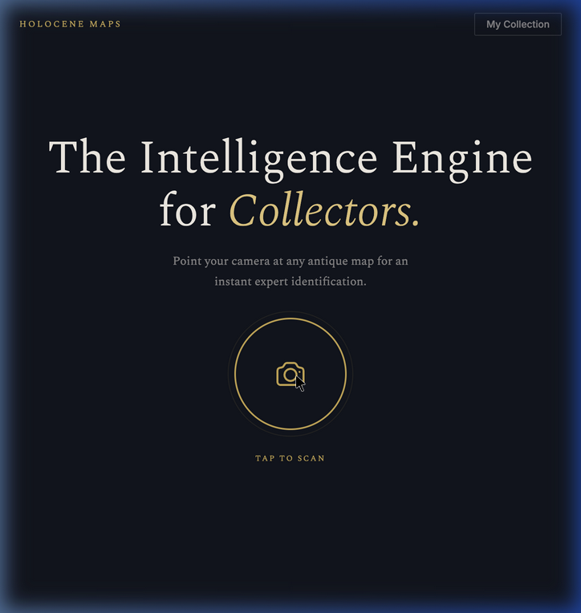
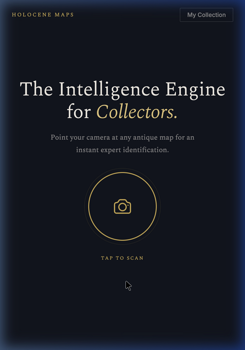
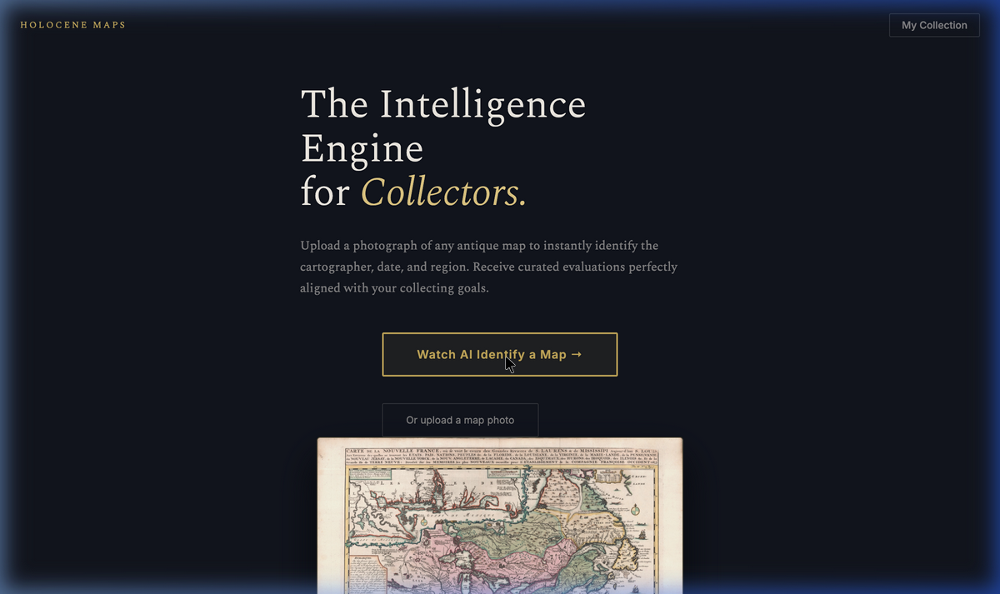
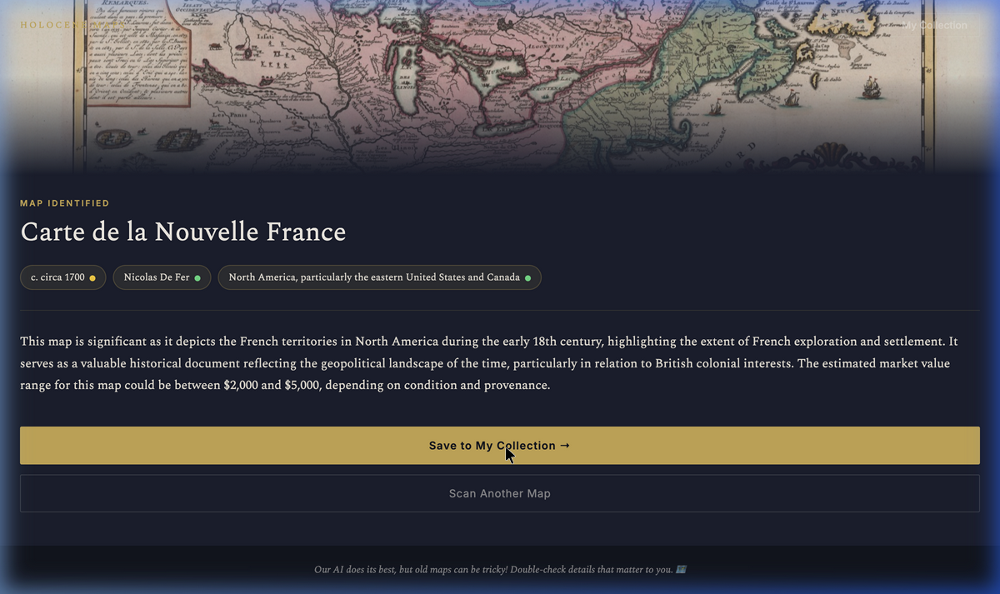
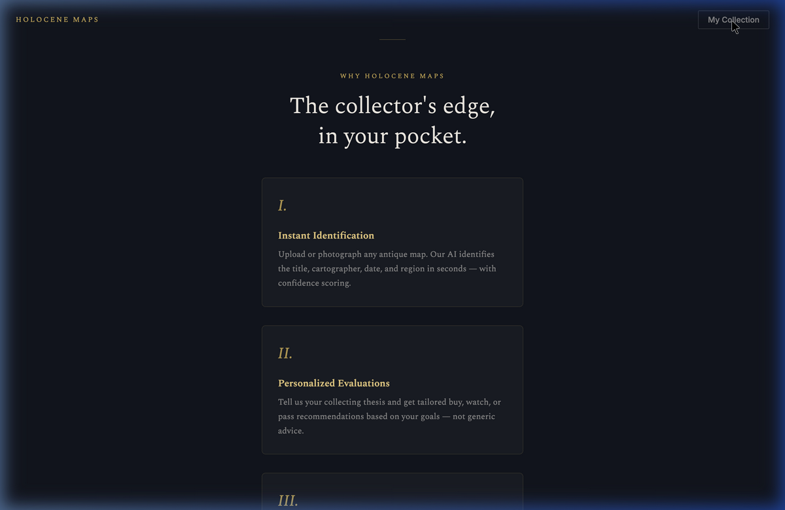

Step 1 User opens holocenemaps.com — sees "Tap to Scan"

Step 2 Scrolls to see the value proposition

Step 3 Taps scan / takes photo of map

Step 4 AI returns identification: title, date, cartographer, value

Step 5 Taps "Save to Collection" → prompted to sign in
1.
Open & Scan
User opens holocenemaps.com and taps the scan button to photograph a map.
2.
Discover Value
Sees instant identification, personalized evaluations, and collection tracking.
3.
AI Identifies Map
Photo is streamed to our AI engine for instant expert analysis.
4.
View Results
Title, date, cartographer, region, confidence scores, and market value estimate.
5.
Save & Sign In
Saves map to collection. Prompted to sign in with Google for personalized experience.